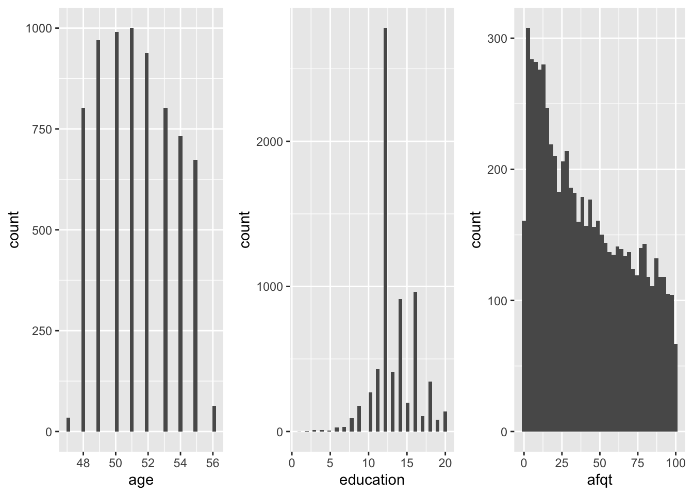

heights <- modelr::heightsEDA
Se på variabler:
heights |>
select(income, height) |>
filter(income < 300000) |>
ggplot(mapping = aes(x = height, y = income)) +
geom_point() +
geom_smooth(method = "lm")`geom_smooth()` using formula = 'y ~ x'summary(heights) income height weight age
Min. : 0.0 Min. :52.0 Min. : 76.0 Min. :47.00
1st Qu.: 165.5 1st Qu.:64.0 1st Qu.:157.0 1st Qu.:49.00
Median : 29589.5 Median :67.0 Median :184.0 Median :51.00
Mean : 41203.9 Mean :67.1 Mean :188.3 Mean :51.33
3rd Qu.: 55000.0 3rd Qu.:70.0 3rd Qu.:212.0 3rd Qu.:53.00
Max. :343830.0 Max. :84.0 Max. :524.0 Max. :56.00
NA's :95
marital sex education afqt
single :1124 male :3402 Min. : 1.00 Min. : 0.00
married :3806 female:3604 1st Qu.:12.00 1st Qu.: 15.12
separated: 366 Median :12.00 Median : 36.76
divorced :1549 Mean :13.22 Mean : 41.21
widowed : 161 3rd Qu.:15.00 3rd Qu.: 65.24
Max. :20.00 Max. :100.00
NA's :10 NA's :262 NA i heights:
# NAs in heights?
heights %>%
apply(MARGIN = 2, FUN = is.na) %>%
apply(MARGIN = 2, FUN = sum) income height weight age marital sex education afqt
0 0 95 0 0 0 10 262 Får akkurat samme svar ved å bruke komandoen:
# NAs in heights?
heights %>%
is.na() %>%
apply(MARGIN = 2, FUN = sum) income height weight age marital sex education afqt
0 0 95 0 0 0 10 262 Her får vi bare opp de variablene som faktisk har NA verdier.
- Punktum betyr her dataene i pipen. Legger det inn i firkanklammer for å gi beskjed om hvilke verdier jeg vil ha med fra dataframen.
# number of NAs in each variable
# drop variables with no NA
heights %>%
is.na() %>%
colSums() %>%
.[. > 0] weight education afqt
95 10 262 Vtable - pakke
Summary Statistics
Her tar vi ikke med variablene “marital og sex”
- St gir oss tabellen i viewer
# package vtable must be installed
heights %>%
select(-marital, -sex) %>%
vtable::st()| Variable | N | Mean | Std. Dev. | Min | Pctl. 25 | Pctl. 75 | Max |
|---|---|---|---|---|---|---|---|
| income | 7006 | 41204 | 55892 | 0 | 166 | 55000 | 343830 |
| height | 7006 | 67 | 4.1 | 52 | 64 | 70 | 84 |
| weight | 6911 | 188 | 44 | 76 | 157 | 212 | 524 |
| age | 7006 | 51 | 2.2 | 47 | 49 | 53 | 56 |
| education | 6996 | 13 | 2.6 | 1 | 12 | 15 | 20 |
| afqt | 6744 | 41 | 29 | 0 | 15 | 65 | 100 |
Her får vi bare opp variablene “marital og sex”
# package vtable must be installed
heights %>%
select(marital, sex) %>%
vtable::st(.)| Variable | N | Percent |
|---|---|---|
| marital | 7006 | |
| ... single | 1124 | 16% |
| ... married | 3806 | 54% |
| ... separated | 366 | 5% |
| ... divorced | 1549 | 22% |
| ... widowed | 161 | 2% |
| sex | 7006 | |
| ... male | 3402 | 49% |
| ... female | 3604 | 51% |
Så ønsker vi å se litt nærmere på sivilstatus (marital):
- Først dropper vi sivilstatus og lager en tabell som blir fordelt mellom menn og kvinner:
heights %>%
select(-marital) %>%
vtable::st(group = 'sex')| Variable | N | Mean | SD | N | Mean | SD |
|---|---|---|---|---|---|---|
| income | 3402 | 53510 | 69399 | 3604 | 29588 | 35347 |
| height | 3402 | 70 | 3 | 3604 | 64 | 2.7 |
| weight | 3392 | 204 | 41 | 3519 | 173 | 43 |
| age | 3402 | 51 | 2.2 | 3604 | 51 | 2.2 |
| education | 3396 | 13 | 2.6 | 3600 | 13 | 2.6 |
| afqt | 3248 | 42 | 30 | 3496 | 41 | 28 |
Her gjør vi en liten bearbeidelse i sivilstatus varaiabelen. Marital inneholdt 5 ulike kategorier -> gift, ugift, skilt, enke og separert.
Lager en ny variabel som heter gift, og skille denne på - gift eller ikke gift. Vi går fra å ha 5 kategorier til å bruke true og false til å svare på om du er gift eller ikke.
Siden vi lager oss en ny variabel “married” bruker vi komandoen “mutate”
Videre vil jeg bare se på kvinnene, og derfor dropper jeg variabelen “sex”.
# package vtable must be installed
heights %>%
mutate(
married = if_else(
marital == 'married',
TRUE,
FALSE
)
) %>%
filter(sex == 'female') %>%
select(-sex, -marital) %>%
vtable::st(group = 'married')| Variable | N | Mean | SD | N | Mean | SD |
|---|---|---|---|---|---|---|
| income | 1703 | 26682 | 30962 | 1901 | 32190 | 38680 |
| height | 1703 | 64 | 2.8 | 1901 | 64 | 2.7 |
| weight | 1662 | 177 | 45 | 1857 | 169 | 40 |
| age | 1703 | 51 | 2.3 | 1901 | 51 | 2.2 |
| education | 1701 | 13 | 2.6 | 1899 | 14 | 2.6 |
| afqt | 1647 | 33 | 26 | 1849 | 47 | 28 |
Så vil vi se på mennene:
# package vtable must be installed
heights %>%
mutate(
married = if_else(
marital == 'married',
TRUE,
FALSE
)
) %>%
filter(sex == 'male') %>%
select(-sex, -marital) %>%
vtable::st(group = 'married')| Variable | N | Mean | SD | N | Mean | SD |
|---|---|---|---|---|---|---|
| income | 1497 | 32122 | 50520 | 1905 | 70317 | 77171 |
| height | 1497 | 70 | 3.1 | 1905 | 70 | 2.9 |
| weight | 1492 | 200 | 42 | 1900 | 207 | 39 |
| age | 1497 | 51 | 2.2 | 1905 | 51 | 2.3 |
| education | 1494 | 12 | 2.2 | 1902 | 14 | 2.7 |
| afqt | 1426 | 34 | 28 | 1822 | 48 | 30 |
Grafisk greie på en variabel
ggplot(data = heights) +
geom_bar(mapping = aes(x = education), na.rm = TRUE)hist1 <- ggplotify::as.ggplot(~hist(heights$income, breaks = 20))
hist2 <- ggplot(heights, mapping = aes(x = income)) +
geom_histogram(bins = 20)
gridExtra::grid.arrange(hist1, hist2, ncol = 2)
Her bruker vi log (logaritme)
hist1 <- ggplotify::as.ggplot(~hist(log(heights$income + 1), breaks = 20))
hist2 <- ggplot(heights, mapping = aes(x = log(income + 1)))+
geom_histogram(bins = 20)
gridExtra::grid.arrange(hist1, hist2, ncol = 2)Generere tre ulike historgram for tre ulike variabler -> income, height og weight
hist3 <- ggplot(heights, mapping = aes(x = income)) +
geom_histogram(bins = 40, na.rm = TRUE)
hist4 <- ggplot(heights, mapping = aes(x = height)) +
geom_histogram(bins = 40, na.rm = TRUE)
hist5 <- ggplot(heights, mapping = aes(x = weight)) +
geom_histogram(bins = 40, na.rm = TRUE)
gridExtra::grid.arrange(hist3, hist4, hist5, nrow = 1)
hist6 <- ggplot(heights, mapping = aes(x = age)) +
geom_histogram(bins = 40, na.rm = TRUE)
hist7 <- ggplot(heights, mapping = aes(x = education)) +
geom_histogram(bins = 40, na.rm = TRUE)
hist8 <- ggplot(heights, mapping = aes(x = afqt)) +
geom_histogram(bins = 40, na.rm = TRUE)
gridExtra::grid.arrange(hist6, hist7, hist8, nrow = 1)
geom_density()
Denne viser de som ikke har fullført HS(high school”, de som ikke har fulført TC osv…
heights %>%
mutate(
edu_fac = cut(education,
breaks = c(0, 12, 14, 16, 21),
labels = c("NotHS", "NotTC", "NotC", "C+"),
right = FALSE)
) %>%
filter(!is.na(edu_fac) & income > 0) %>%
ggplot(mapping = aes(x = income, fill = edu_fac, colour = edu_fac)) +
geom_density(alpha = 0.2, na.rm = TRUE) +
facet_wrap(~sex)